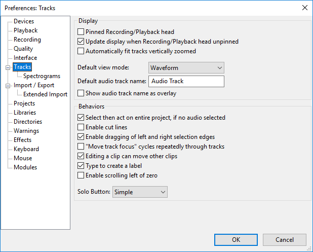
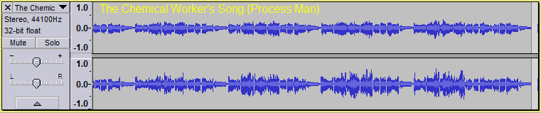

Tracks Preferences
From Audacity Development Manual
- Accessed by: (on a Mac
- 
- Click on any of the other Preferences sections in the above image to go directly to that Preferences page.
Display
- Pinned Recording/Playback head: You can change Audacity to play and record with a fixed head pinned to the center of the Timeline. In this mode the head remains static and the tracks will move as the audio is played or recorded.
- Update display when Recording/Playback head is unpinned: If Pinned Recording/Playback head (see above) is unchecked as per default, this option scrolls the Timeline leftwards during standard play or recording when the playback or recording cursor reaches the right-hand edge of the project.
Most users would keep this setting enabled. Turning it off:
- may prevent interrupted playback or recording on slower computers
- lets you drag the horizontal scrollbar at the bottom of the window to a new position then restart playback from there
- halts Scrubbing and Seeking playback when the playhead reaches either edge of the visible project
- prevents losing sight of a selection edge when making loops
- makes it easier to listen repeatedlty from a particular start point without its visible surroundings changing.
This preference may also be turned on and off during playback using the Timeline right-click menu.
- Automatically fit tracks vertically zoomed: Tracks will be automatically resized to fit in the vertical space of the project window if possible. All tracks that have not been collapsed using the Track Collapse Button or Collapse All Tracks menu item are resized so that each separate waveform has the same height. Accordingly mono tracks will have the same height as each other and stereo tracks will have the same height as each other (twice the height of the mono tracks).
- Default view mode: Choose the default view for all newly-created audio tracks. The choices are the same as those available in the Audio Track Dropdown Menu.
- Default audio track name: The default name that Audacity will use for new audio tracks other than imported files. The Audacity default name is "Audio Track".
- Show audio track name as overlay: When this is enabled the audio track name is displayed superimposed in yellow at top left of all audio tracks. Note that the track name is always shown in the Track Control Panel but will be truncated if the name is too long to fit.
- 
Behaviors
- Select then act on entire project, if no audio selected: If you select no audio before applying an effect, the effect will be automatically applied to all audio in all tracks. This also applies to other menu items requiring an audio selection to be made. If this preference is unchecked, all menu items and buttons requiring an audio selection will remain grayed out until audio is selected.
- Enable cut lines: Displays a light blue vertical line at the left edge of a cut edit, which changes to red after clicking elsewhere in the track. Click on the line at any time to restore the cut audio; if you restore in error, use to get the cut line back. To remove the line without restoring audio, right-click over it. will restore the line if you make a mistake.
- Enable dragging left and right selection edges: Lets you expand or contract existing selection regions with the mouse after they have been created. If unchecked you must use the Selection Bar or keyboard to modify existing selection regions. See Audacity Selection for further details.
- "Move track focus" cycles repeatedly through tracks: When using the up and down arrow keys to change which track is focused, moving the focus off one end (top or bottom) makes the focus jump to the other end.
- Editing a clip can move other clips: If the track has been split into more than one clip, any clips following to right of the edit point can always move as necessary in response to pasting, cutting, deleting or other change that adds or removes content.
Unchecking "Editing a clip can move..." pins clips so that they cannot move in response to an edit in another clip. When removing content, any following clips will not be allowed to move back. When pasting, an error message will display if there is not enough room to paste without moving the following clips.
- Type to create a label: When enabled (default), if there is already a label track that has the yellow focus border, you do not need to use "Add Label at Selection" or its CTRL + B shortcut to create a new label. Just type your required label text to create a new label at the position of the editing cursor or selection region. If the label track does not have focus, use the UP or DOWN arrow keys on your keyboard to move focus into the label track.
When this preference is disabled, typing never creates a label in the focused label track. This lets you use shortcuts (for example, transport shortcuts to play audio related to the editing cursor or selection) without accidentally creating an unwanted label. When you want to create a new label, use "Add Label at Selection" or CTRL + B or "Add Label at Playback Position" CTRL + M.
- if audio is playing, recording or paused, and the cursor or selection is at the same position in waveform and label track
- if there is already a label at the exact same position in the label track.
You can also create a label at the same position by moving focus to and typing in another label track, as long as there is no label yet at that position, and if audio is playing, as long as the cursor or selection in the waveform is at a different position.
- Enable scrolling left of zero: Enables you to scroll to the left of time zero on the Timeline. The default setting is "off". This can be make Scrubbing from the start or end of the track easier when using pinned playhead.
- Solo Button: The "Solo" button on the Track Control Panels can behave in three different ways:
- In "Simple" mode (default), "Solo" means as it does in common parlance - a track made solo is the only one that can be heard. If a track is solo, the mute buttons are set down on all the other tracks, so that solo is just a shortcut way of muting all tracks except one. If on any occasion you want the Solo button to select multiple tracks for listening, hold down SHIFT when clicking Solo.
- "Multi-track" will suit those used to mixing desks and other professional audio software. Any number of tracks can be made solo so that they mix together, but if any solo button is down, the mute buttons have no effect. If on any occasion you want the Solo button to play only one track at a time (so that clicking it releases any other solo buttons), hold down SHIFT when clicking Solo.
- "None" mode has no solo buttons, so you select the tracks you want to play by unmuting them (clicking the mute buttons so that they are up).